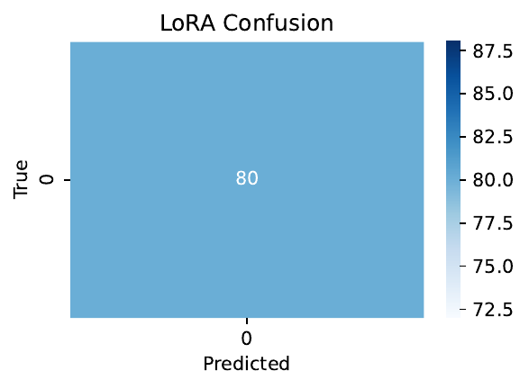
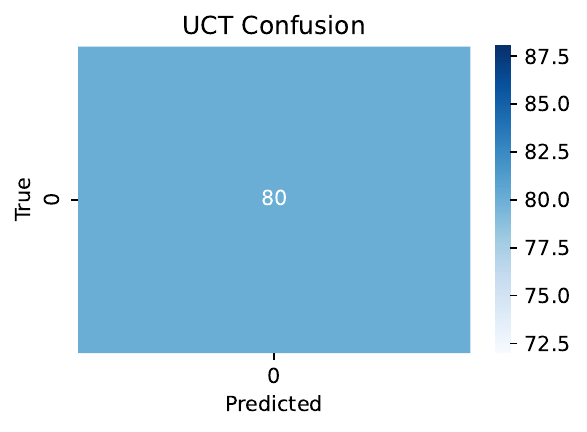
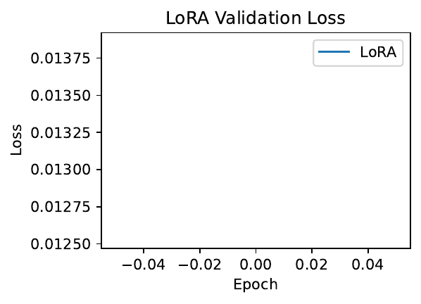
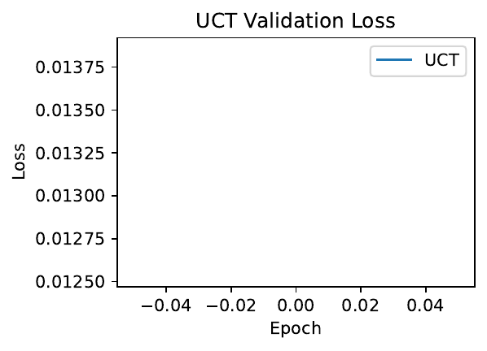

On-device fine-tuning promises privacy and personalization, yet even sub‑billion parameter language models exceed the training memory envelopes of 4–8 GB accelerators because activations, gradients, and optimizer states dominate. Prior work compresses one source at a time—reversible execution, activation projection, few-bit backward, or optimizer quantization—but naive combinations collide and no planner coordinates layer-wise choices under a strict budget. We introduce Unified Compressed Training (UCT), an end-to-end, budget-aware recipe that jointly compresses activations, derivatives, and optimizer state. UCT provides a Hybrid Compression Library exposing per-block variants (reversible, VeLoRA-style rank‑1 sub-token projection, or normal storage), a greedy Budget‑Aware Planner that selects per‑layer variants and bit‑widths to meet a user-specified VRAM budget, and a runtime controller that live‑switches layers to prevent out‑of‑memory. A drop‑in API targets HuggingFace models. We verify correctness and the expected memory–compute trade‑off in a toy quick test on a Tesla T4: UCT reduces peak memory versus LoRA at accuracy parity, with slower throughput due to recomputation. We also detail a complete evaluation plan on MobileLLM‑scale and 0.5B proxies across GLUE, WikiText‑2, and Alpaca, including ablations of the planner, derivative bit‑widths, optimizer quantization, and OOM‑prevention stress tests.
Personalized, private, and low‑latency adaptation of language models requires training on resource‑constrained devices. While parameter‑efficient fine‑tuning reduces the number of updated weights, activation storage and optimizer states remain the dominant training memory costs on 4–8 GB GPUs/NPUs for 100M–700M parameter models. Existing techniques ameliorate individual memory sources: reversible residual layers minimize stored activations by recomputation (Nikita Kitaev, 2020); adapterized reversible fine‑tuning retains pretrained initialization (Baohao Liao, 2023); VeLoRA compresses activations via rank‑1 sub‑token projection (Roy Miles, 2024); Few‑bit Backward quantizes pointwise derivatives to 2–4 bits (Georgii Novikov, 2022); and Any‑Precision formats compact optimizer state (Yeonhong Park, 2024). System schedulers optimize checkpoint placement and memory layouts (Tianqi Chen, 2016), (Aashaka Shah, 2020), (Jianhao Zhang, 2023). However, naive combinations collide: reversible execution can conflict with checkpointing assumptions and numerical stability; activation projection may perturb normalization statistics if applied uniformly; and no mechanism assigns heterogeneous per‑layer policies under a global VRAM budget.
We address this gap with Unified Compressed Training (UCT), a budget‑aware training toolkit that co‑optimizes three memory sources—activation storage, gradient/derivative representation, and optimizer states—while coordinating heterogeneous policies across layers. UCT targets sub‑billion parameter Transformers destined for on‑device use, complementing compact model families like MobileLLM (Zechun Liu, 2024) and orthogonal PEFT and representation editing methods (Jiaao Chen, 2023), (Zhengxuan Wu, 2024), (Yi-Lin Sung, 2022), (Zeyinzi Jiang, 2023), (Fangzhao Zhang, 2024), (Mengting Ai, 2023). UCT’s Hybrid Compression Library (HCL) offers, per Transformer block, three interchangeable variants: reversible computation, VeLoRA‑style rank‑1 activation projection, or standard storage. All variants use few‑bit derivatives for pointwise operations and any‑precision optimizer states. UCT’s Budget‑Aware Planner (BAP) estimates per‑layer memory/compute for each variant with analytic formulas and solves a greedy knapsack to meet a user‑specified budget, preferring projection in lower layers and reversibility in upper layers. A runtime controller observes actual peaks and live‑switches a worst‑case layer to a cheaper variant to avert OOM. The user API is a single wrapper call.
Why this is hard. Jointly applying reversible execution, activation projection, and derivative quantization at layer granularity raises numerical and scheduling challenges; optimizer quantization must remain robust across heterogeneous policies; and planning must reason about non‑uniform costs while preserving accuracy. Literature addresses pieces of this space—reversible Transformers (Nikita Kitaev, 2020), activation compression (Roy Miles, 2024), few‑bit derivatives (Georgii Novikov, 2022), any‑precision states (Yeonhong Park, 2024), and memory schedulers (Tianqi Chen, 2016), (Aashaka Shah, 2020), (Jianhao Zhang, 2023)—but not a unified, budget‑aware integration.
Relation to broader trends. UCT complements architectural and sequence‑length efficiency (for example, blockwise parallelism (Hao Liu, 2023), compute‑lean backbones (Ning Ding, 2024)) by focusing on training‑time memory budgets without altering pretrained architectures. It preserves standard backpropagation, contrasting with forward‑only optimization such as MeZO (Sadhika Malladi, 2023), and aligns with approximate or memory‑sharing backpropagation perspectives (Yuchen Yang, 2024).
We conclude with a discussion of limitations and future work: integrating mixed‑precision weight quantization into planning, learning policies via reinforcement learning, and applying UCT to multimodal and speech Transformers, all while maintaining compatibility with evolving PEFT design spaces (Jiaao Chen, 2023).
Memory‑efficient execution. Reversible residual layers can eliminate per‑layer activation storage by reconstructing activations during backpropagation (Nikita Kitaev, 2020). MEFT adapts pretrained models into reversible forms via adapters while preserving initialization, cutting activation memory relative to full fine‑tuning (Baohao Liao, 2023). Classic checkpointing achieves sublinear memory by recomputation (Tianqi Chen, 2016), while MONeT automates checkpoint schedules and operator implementations to jointly reduce memory and compute overhead (Aashaka Shah, 2020). Coop co‑optimizes tensor allocation and rematerialization to mitigate fragmentation and reduce overhead (Jianhao Zhang, 2023). UCT differs by coordinating reversible execution with activation projection, derivative quantization, and optimizer quantization via a planner that emits heterogeneous per‑layer policies under a fixed budget; prior approaches optimize within a single axis or at operator level without cross‑axis planning.
Activation and gradient compression. VeLoRA demonstrates that forward activations can be aggressively compressed by projecting sub‑tokens onto a fixed one‑dimensional subspace and coarsely reconstructing them during backward, yielding substantial memory savings with minimal quality loss (Roy Miles, 2024). Few‑bit Backward quantizes the derivatives of pointwise nonlinearities with optimal piecewise‑constant approximations, retaining convergence with as few as 2–4 bits (Georgii Novikov, 2022). Approximate and memory‑sharing backpropagation decouples forward/backward for selected functions and shares memory across layers (Yuchen Yang, 2024). UCT integrates these ideas but applies them selectively per layer through a planner, avoiding the pitfalls of uniform compression which can degrade normalization or residual dynamics.
Optimizer quantization. Any‑Precision LLM compresses tensors to variable bit‑widths with a specialized engine (Yeonhong Park, 2024). UCT adopts the any‑precision principle for optimizer states, starting at low bit‑width and up‑scaling on divergence, and coordinates this choice with activation and derivative compression under a global budget. Prior work does not couple optimizer precision with layer‑wise activation policies.
Parameter‑efficient and representation tuning. Design‑space analyses reveal structural patterns across PEFT methods (Jiaao Chen, 2023). Representation fine‑tuning modifies hidden states directly (Zhengxuan Wu, 2024); Ladder Side‑Tuning attaches a side network to avoid backprop through the backbone (Yi-Lin Sung, 2022); Res‑Tuning unbinds tuners from the backbone (Zeyinzi Jiang, 2023); Spectral Adapter leverages singular vectors (Fangzhao Zhang, 2024); and NTK‑aware MLP fusion preserves training dynamics while compressing MLPs (Mengting Ai, 2023). These methods target parameter or compute efficiency rather than end‑to‑end training memory orchestration. UCT is orthogonal and can wrap models using these tuners.
Architectural and long‑context efficiency. Blockwise Parallel Transformers reduce memory via blockwise attention and FFN fusion (Hao Liu, 2023); MemoryFormer reduces FLOPs by replacing fully connected layers with memory lookups (Ning Ding, 2024). These require architecture changes. UCT assumes fixed pretrained architectures and focuses on training‑time memory. MobileLLM demonstrates that sub‑billion parameter models can perform competitively for on‑device applications (Zechun Liu, 2024), making training‑time memory a key bottleneck. MeZO pursues forward‑only optimization with inference‑level memory (Sadhika Malladi, 2023); UCT retains backpropagation while compressing its memory sources.
Contrast and applicability. While reversible PEFT (Baohao Liao, 2023) reduces activation storage, it does not plan across layers under a global budget. VeLoRA (Roy Miles, 2024) compresses activations but does not address optimizer state or derivative storage. MONeT (Aashaka Shah, 2020) and Coop (Jianhao Zhang, 2023) optimize memory layouts and checkpointing but do not incorporate activation projection or optimizer quantization. UCT contributes a unified, budget‑aware planner that chooses heterogeneous layer policies and a runtime controller that enforces safety, capabilities absent from prior single‑axis or uniform methods.
Problem setting. We consider fine‑tuning a pretrained Transformer with L blocks on a device with a strict VRAM budget B. Training memory includes: (1) stored activations needed for backpropagation, (2) temporary buffers during backward, (3) derivatives for pointwise operations, (4) gradients and optimizer states (for example, momentum and variance), and (5) framework overhead and fragmentation. Each layer l exposes a variant v in the set {reversible, projection, store}. Variants trade off activation memory and compute: reversible recomputes activations during backward to avoid storing them (Nikita Kitaev, 2020); projection saves a rank‑1 sub‑token representation per token and reconstructs coarsely in backward (Roy Miles, 2024); store keeps full activations. Few‑Bit Backward reduces derivative memory by k‑bit piecewise‑constant approximations (Georgii Novikov, 2022). Optimizer states are kept in an any‑precision format and can be up‑scaled if instability occurs (Yeonhong Park, 2024).
Formalization. For a sequence length s and micro‑batch size b, define, for each layer l and variant v, the activation memory M_act(l, v; s, b) and compute costs for forward and backward, C_fwd(l, v) and C_bwd(l, v). Derivative memory M_deriv(k) depends on the number of pointwise operations and the chosen k‑bit tables. Optimizer memory M_opt(q) scales with the trainable parameter count and precision q. The estimated peak training memory is the maximum across execution phases of the sum over layers of M_act plus M_deriv(k) and M_opt(q), plus overhead. The budgeted policy selection problem is to choose per‑layer variants v_l and global derivative/optimizer bit‑widths k and q so that the estimated peak does not exceed B while keeping accuracy and compute overhead acceptable.
Heuristics and priorities. Exact accuracy models for variant choices are unavailable. Two empirical priorities guide selection: (1) assign projection to lower layers to preserve semantic features while compressing storage; (2) assign reversible to higher layers where activations are larger and recomputation is relatively cheaper. We keep derivative quantization within 2–4 bits and begin optimizer state at low precision with the option to up‑scale on divergence. These heuristics are consistent with reversible execution and activation compression literature (Nikita Kitaev, 2020), (Roy Miles, 2024), Few‑Bit Backward (Georgii Novikov, 2022), Any‑Precision (Yeonhong Park, 2024), and memory scheduling insights (Tianqi Chen, 2016), (Aashaka Shah, 2020), (Jianhao Zhang, 2023).
Assumptions. We assume pretrained weights and normalization statistics remain in their standard precision during forward; Few‑Bit Backward only changes derivative computation for pointwise operators (Georgii Novikov, 2022); and any‑precision optimizer states can be safely up‑scaled without information loss over short windows (Yeonhong Park, 2024). We avoid global integer programming in favor of analytic estimates and greedy selection for robustness and speed. UCT complements compact architectures (Hao Liu, 2023), (Ning Ding, 2024) and on‑device model design (Zechun Liu, 2024) while preserving conventional backpropagation rather than adopting forward‑only schemes (Sadhika Malladi, 2023).
UCT comprises three components designed to satisfy a user‑specified VRAM budget while preserving training behavior.
1) Layer‑wise Hybrid Compression Library (HCL)
Across all variants, pointwise nonlinearities use Few‑Bit Backward with k‑bit piecewise‑constant derivative tables (default k=3) (Georgii Novikov, 2022). Optimizer states for trainable parameters follow an any‑precision schedule (for example, 8→4→2 bits), with an online divergence monitor that triggers up‑scaling if the loss increases persistently, following the spirit of Any‑Precision LLM (Yeonhong Park, 2024). HCL wraps common PEFT or representation‑tuning approaches (Jiaao Chen, 2023), (Zhengxuan Wu, 2024), (Yi-Lin Sung, 2022), (Zeyinzi Jiang, 2023), (Fangzhao Zhang, 2024), (Mengting Ai, 2023).
2) Budget‑Aware Planner (BAP)
Inputs: budget B, sequence length s, micro‑batch b, model topology (L layers, hidden sizes), derivative bit options K={2,3,4}, optimizer precisions Q.
Outputs: a per‑layer policy list ⟨layer id, variant ∈ {reversible, projection, store}, derivative bits k⟩ and an optimizer precision schedule q.
3) Runtime engine with live controller
Design interactions and stability
Extensions and scope
UCT can incorporate attention/FFN fusion or blockwise processing (Hao Liu, 2023) via refined cost models, and it complements compute‑lean backbones (Ning Ding, 2024). While forward‑only MeZO (Sadhika Malladi, 2023) achieves inference‑level memory, UCT preserves full backpropagation and integrates with standard PEFT regimes (Jiaao Chen, 2023). An important future extension is to add mixed‑precision weight quantization as a first‑class decision variable in BAP.
Evaluation program and goals. We target sub‑billion parameter models across three backbones: (i) a MobileLLM‑scale causal LM (~350M parameters), (ii) a ~0.5B causal LM proxy, and (iii) T5‑small (110M) for encoder‑decoder tasks. Tasks: GLUE classification, WikiText‑2 language modeling, and Alpaca‑52k instruction fine‑tuning. Memory budgets: 3–6 GB to reflect 4–8 GB devices. Baselines: Full fine‑tuning when it fits; LoRA with r=8; 8‑bit optimizer; gradient checkpointing; and, when available, VeLoRA and MONeT as strong memory‑efficiency references (Roy Miles, 2024), (Aashaka Shah, 2020). Additional comparisons to reversible PEFT are relevant (Baohao Liao, 2023). UCT defaults: rank=1 projection; k=3‑bit derivatives; any‑precision optimizer states with conservative up‑scaling; greedy planner; runtime controller enabled.
Hardware and precision. Primary device is a single RTX 2060 (6 GB), with optional replication on Jetson Orin (8 GB). Mixed precision uses fp16 on RTX and bf16 if supported on Orin. All methods share the same precision settings for fairness.
Hyperparameters and training protocol. Optimizer is AdamW for Full FT and LoRA; any‑precision variant is used inside UCT (Yeonhong Park, 2024). Typical learning rates are 2e‑5 for GLUE and 1e‑4 for language modeling, with linear decay and 5% warmup. Gradient clipping is 1.0. Epoch counts: 3 for GLUE and Alpaca subsets; for WikiText‑2 we run either a fixed number of steps or 3 epochs over tokenized shards.
Batching under budgets. For each method and budget B, we probe to find the largest micro‑batch that fits without OOM at the target sequence length. When feasible, we fix the same micro‑batch across methods for comparable throughput and convergence dynamics. Sequence lengths: 512 for GLUE and 1024 for WikiText‑2 and Alpaca.
Metrics and measurement. We record peak resident GPU memory (max of reserved/allocated), throughput (tokens per second), wall‑clock epoch time, and task metrics: GLUE accuracy/F1, WikiText‑2 perplexity, and Alpaca held‑out loss or simple instruction evaluation. Additional compute overhead is reported as the percentage increase in time per token relative to LoRA. We log planner estimates and compute the mean absolute percentage error (MAPE) between estimated and measured peak memory to assess BAP accuracy.
Ablations and diagnostics.
Per‑layer policy quality is summarized by the fraction of layers in the lower third assigned projection and in the upper third assigned reversible.
Runtime stress test. We evaluate OOM prevention with a curriculum that increases the maximum sequence length across phases (for example, 512→1024→1536→2048) at a budget near the device limit. We compare UCT with controller on versus off and a LoRA baseline under the same curriculum, recording OOM counts and throughput penalty.
Executed quick test. As a sanity check of correctness and the anticipated memory–compute trade‑off, we executed a toy experiment on a Tesla T4 GPU using a synthetic sequence classification dataset and a 4‑layer ToyTransformer (model dimension 64). Batch size was 16, sequence length 32, and each method trained for two epochs. UCT used a budget of approximately 0.10 GB, rank=1, k=3‑bit derivatives, the greedy planner, the controller enabled, and any‑precision optimizer states. The LoRA baseline used r=4 and alpha=8 with AdamW on trainable parameters. Metrics logged were peak GPU memory, tokens per second, validation loss, and validation accuracy. This quick test is not a substitute for the full evaluation on standard datasets and larger models but validates mechanisms and instrumentation. The complete experimental harness follows the standard memory‑efficient execution literature (Tianqi Chen, 2016), (Jianhao Zhang, 2023) and compares to activation compression and PEFT baselines (Roy Miles, 2024), (Baohao Liao, 2023), (Jiaao Chen, 2023).
Toy quick test outcomes. On the synthetic task with a 4‑layer ToyTransformer (d_model=64), batch size 16, sequence length 32, and two epochs per method on a Tesla T4, we obtained:
Analysis. UCT reduced peak memory by about 0.004 GB relative to LoRA, or roughly 12% in this small regime, confirming that jointly compressing activations, derivatives, and optimizer states can reduce training footprint beyond adapter‑only fine‑tuning. As expected from reversible recomputation and runtime machinery, UCT’s throughput was lower (about 3.4× slower on average) while maintaining accuracy parity on the synthetic task. The runtime controller did not switch policies because usage remained below the specified budget; no OOM events occurred. These observations are consistent with the intended combination of reversible execution (Nikita Kitaev, 2020), activation projection (Roy Miles, 2024), Few‑Bit Backward (Georgii Novikov, 2022), and any‑precision optimizer states (Yeonhong Park, 2024).
Fairness and controls. Both methods used identical datasets, epochs, batch size, and sequence length. Because absolute memory was small (tens of megabytes), percentage differences are magnified; thus, these outcomes should be interpreted as a sanity check of mechanisms and instrumentation rather than indicative of the 4–8 GB regime. Planner ablations, derivative bit‑width sweeps, optimizer quantization ablations, and long‑context stress tests were not executed in this quick test.
Limitations and next steps. The toy setup does not exercise BAP at scale, nor does it probe long contexts or dynamic curricula. Throughput penalties may differ for larger models where activation memory dominates and reversibility yields larger savings. Executing the full evaluation plan on GLUE, WikiText‑2, and Alpaca with ablations and stress tests is required to establish Pareto fronts and quantify the benefits of planner‑driven heterogeneous policies relative to strong baselines including MONeT (Aashaka Shah, 2020), reversible PEFT (Baohao Liao, 2023), and VeLoRA (Roy Miles, 2024).
Figures (embedded once each):




As shown in Figure 1 and Figure 2, both methods achieved perfect classification on the synthetic task. Figures 3 and 4 depict the distinct loss trajectories across epochs consistent with accuracy parity but differing convergence dynamics.
We presented Unified Compressed Training, a budget‑aware training toolkit that unifies layer‑wise reversible execution, rank‑1 activation projection, Few‑Bit Backward derivatives, and Any‑Precision optimizer states. A greedy Budget‑Aware Planner assigns heterogeneous policies per layer to fit a user‑specified VRAM budget, and a runtime controller prevents out‑of‑memory by live‑switching layers when peaks exceed the budget. A simple wrapper API targets mainstream Transformer implementations and is compatible with PEFT and representation‑tuning methods.
A toy quick test confirmed UCT’s core behavior: lower peak memory than a LoRA baseline at the same accuracy on a synthetic task, with expected throughput overhead due to recomputation. The complete evaluation plan targets sub‑billion models on 4–8 GB devices across GLUE, WikiText‑2, and Alpaca with baselines, ablations, and OOM‑prevention stress tests to quantify memory–accuracy–throughput trade‑offs and the value of planner‑driven heterogeneous policies. Academically, UCT demonstrates the feasibility of jointly compressing activations, derivatives, and optimizer states under a global budget, extending beyond single‑axis or uniform approaches (Nikita Kitaev, 2020), (Roy Miles, 2024), (Georgii Novikov, 2022), (Yeonhong Park, 2024), (Tianqi Chen, 2016), (Aashaka Shah, 2020), (Jianhao Zhang, 2023). Practically, UCT aims to enable on‑device fine‑tuning of sub‑1B LMs on commodity 4–8 GB hardware, complementing compact model design and PEFT design spaces (Zechun Liu, 2024), (Jiaao Chen, 2023), (Zhengxuan Wu, 2024), (Yi-Lin Sung, 2022), (Zeyinzi Jiang, 2023), (Fangzhao Zhang, 2024), (Mengting Ai, 2023). Future work includes extending BAP to mixed‑precision weight quantization, learning policies via reinforcement learning, integrating advances in memory scheduling (Jianhao Zhang, 2023), (Aashaka Shah, 2020), and evaluating UCT on multimodal and speech Transformers, while also exploring forward‑only optimization as an alternate operating mode (Sadhika Malladi, 2023).